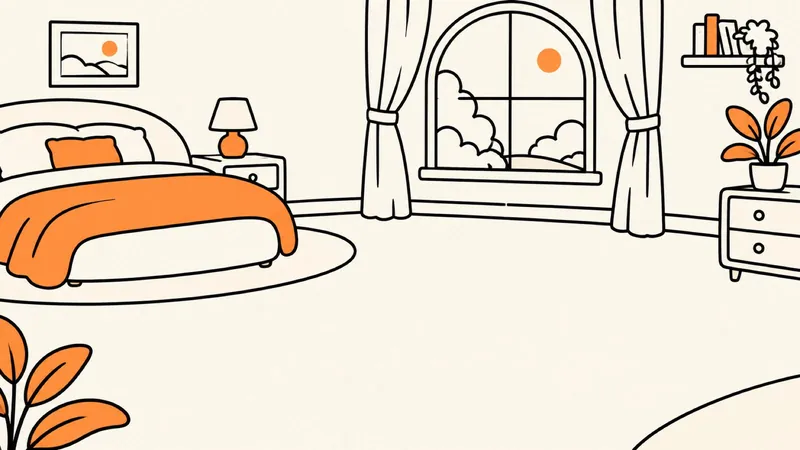
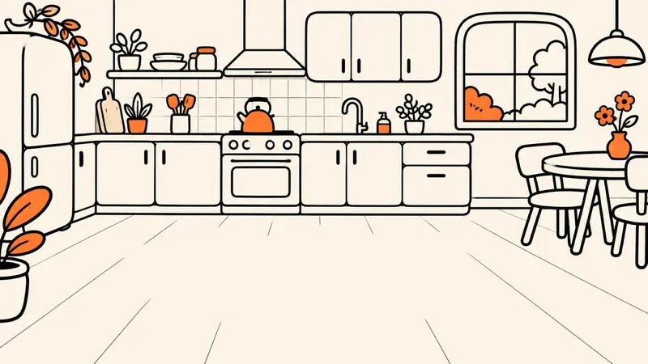
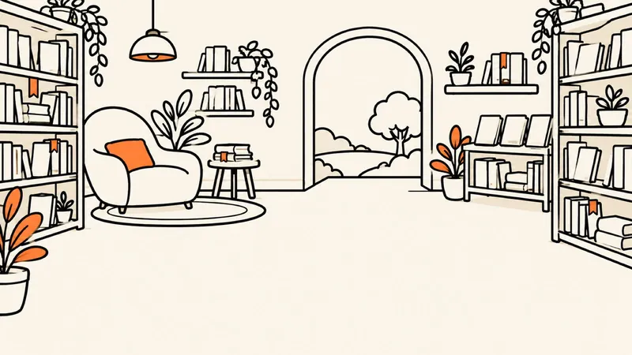
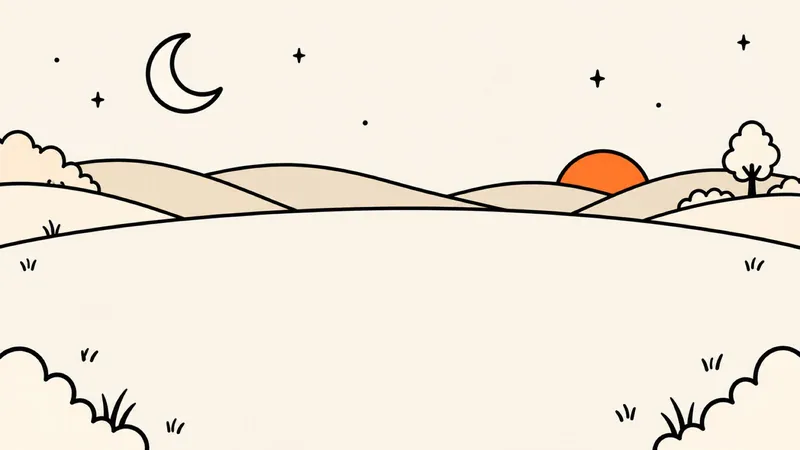
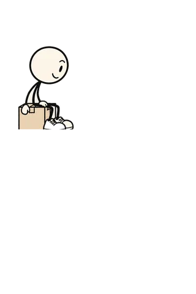

Dentist at 12:30. Go.
The dentist. On time. We don't know how either.
January

Sent? No. You send.
The Alex text. Three words. One send.
February


Blue tin. Above the fridge.
Spare keys found on the first try. A first.
March

Oat milk. Just the one.
One carton. Bought once. The fridge breathes.
April

À emporter.
Paris. The kiosk man smiled. Doddy was practising.
May


The one with the dragon.
Marta's book, finished. She was right.
June

Locker 4471. Run.
Platform 4, parcel in hand, 40 seconds to spare.
July
Rain at four. Told you.
Jacket. Dry. Smug.
August

Size 32 now. Told you.
Shoe shop. No guessing. He's 32.
September
Pharmacy. Now.
Tapped on the shoulder outside the pharmacy. Doddy's new trick.
OctoberCalled Mum. Blue teapot delivered. Hero status.
November

Three things, one tap. Sleep.
Tomorrow sorted at 23:30. In bed by 23:31.
December


 The album is where this is going. For what Doddy does right now, labelled moment by moment, see
The album is where this is going. For what Doddy does right now, labelled moment by moment, see